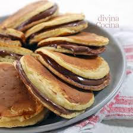
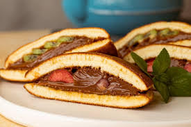
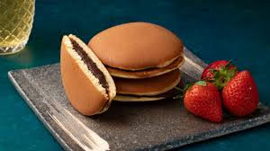
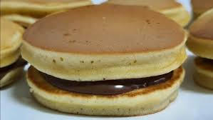
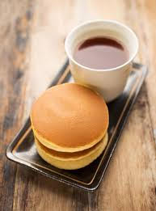
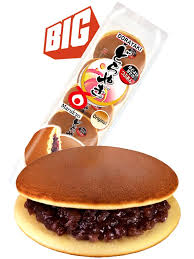
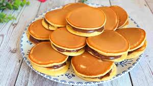
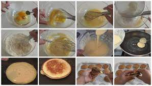

Ingredientes:
- 2 Huevos
- Azúcar (50 gramos)
- Miel (1 cucharada)
- Harina 0000 (85 gramos)
- Una pizca de sal
- Agua (40 ml)
- Aceite de Oliva
- Chocolate negro (4 barras)
Preparación paso a paso:
- Ponemos los huevos en un recipiente hondo junto con el azúcar y la miel. Batimos con una batidora de varillas hasta que se doble o triplique su volumen consiguiendo un color pálido con textura suave.
- Mezclamos la harina con la levadura y la pizca de sal, Después de eso, tamizamos encima de la mezcla con movimientos envolventes y suaves, incorporamos el agua y volvemos a batir todo junto.
- Luego de mezclar todo, lo tapamos con un film plástico y dejamos reposar durante 15 minutos a temperatura ambiente.
- 15 minutos después del reposo, preparamos una sartén antiadherente engrasándola con un poco de aceite de oliva y calentamos a temperatura media.
- A continuación tomaremos un cucharón con fondo hondo e iremos añadiendo cucharones de masa en la sartén dando forma circular con el dorso del cucharón.
- Después de eso, iremos viendo como se cocinan y cuando le empiecen a salir pequeñas burbujas, eso indicara que el lado de abajo ya está cocido. Entonces, tomaremos una espátula y deslizaremos por abajo dándolo vuelta para que se cocinen de ambos lados.
- Mientras se cocinan los Dorayakis vamos a ir derritiendo las 4 barras de chocolate en baño maría, ya estando el chocolate derretido, dejaremos enfriar un poco para que se vuelva espero así no se resbala al momento de untarlo en los Dorayakis.